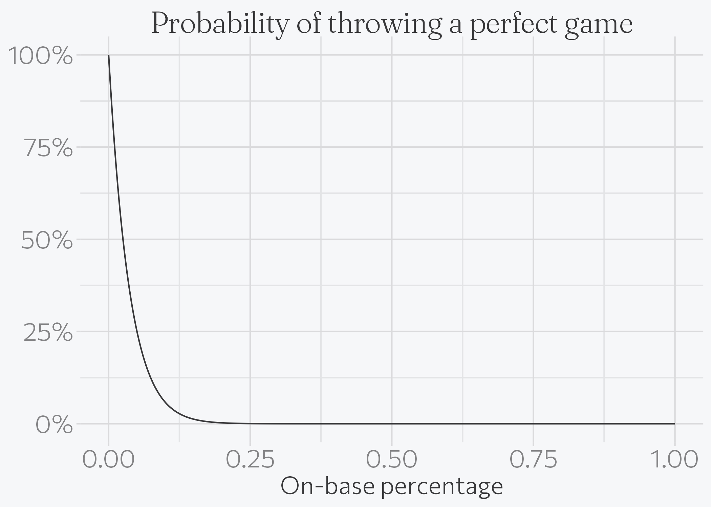
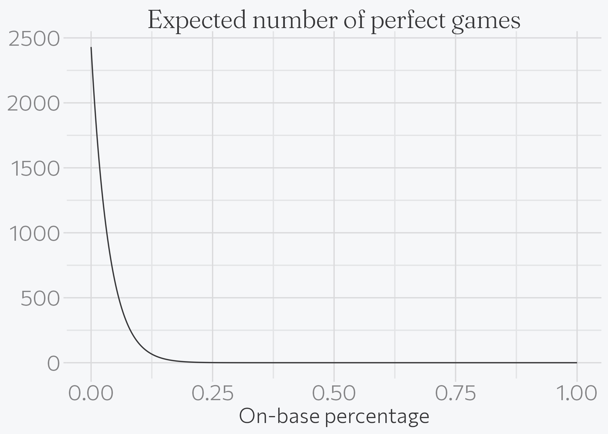
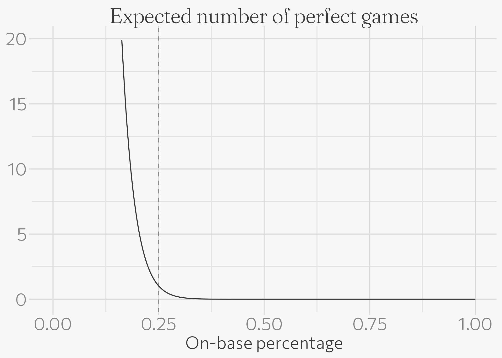

library(tidyverse)
# Use the same families and weights as the site. These resolve to static
# TTFs; the variable-font builds ignore the weight axis under ragg.
systemfonts::require_font("Commissioner", verbose = FALSE)
systemfonts::register_variant("Commissioner Light",
family = "Commissioner", weight = "light")
systemfonts::register_variant("Fraunces Soft Light",
family = "Fraunces 72pt Soft", weight = "light")
theme_set(
brand.yml::theme_brand_ggplot2(base_size = 18) +
theme(
text = element_text(family = "Commissioner Light"),
plot.title = element_text(family = "Fraunces Soft Light"),
plot.subtitle = element_text(family = "Fraunces Soft Light")
)
)How low would a batter’s chances of reaching base have to be for you to expect one perfect game per season?
r
riddler
The recent Riddler Express deals with the increasing rate of no-hitters in the MLB:
As of this week, there have already been six no-hitters this MLB season, well on pace to break the record for no-hitters for a season in the modern era, which stands at nine in 1990.
To achieve a no-hitter, a pitcher must pitch a complete game (recording 27 outs over nine innings) without allowing a hit (i.e., walks and other means of reaching base are allowed). However, to achieve a perfect game, a pitcher must record 27 consecutive outs without allowing anyone from the opposing team on base. There have been only 23 perfect games in MLB history. Two were thrown in 2010, and three were thrown in 2012.
In 2009, the leaguewide on-base percentage was 0.333. That figure has fallen over the past decade, and this year, it’s all the way down to 0.313, which helps explain the surge in no-hitters.
How low would a batter’s chances of reaching base have to be for you to expect one perfect game per season? (You can make the following simplifying assumptions: All batters have the same chances of reaching base; at-bats are independent from each other; there are 30 MLB teams, and each club plays 162 games; and no games go into extra innings.)
To answer the question, we first need to know for a given on-base percentage what is the probability of achieving 27 consecutive outs? Or alternatively, what is the probability that a batter fails to reach base in twenty-seven consecutive plate appearances?
We can model this probability using the Geometric distribution which is the probability distribution of the number of \(Y = X - 1\) failures before the first success. In this case, success is defined as a batter reaching base. So we need to know the probability of achieving 27 failures in a row. We can use pgeom() to calculate this probability given a specific on-base percentage. Here I iterate through all possible on-base percentages to the third decimal place.
perfect_games <- tibble(
# range of possible on base percentages
obp = seq(from = 0, to = 1, by = 0.001),
# probability of 27 consecutive failures to reach base
# based on geometric distribution
prob_perfect_game = 1 - pgeom(q = 26, prob = obp)
) %>%
# fix NaN for obp = 0
mutate(
prob_perfect_game = ifelse(is.na(prob_perfect_game), 1, prob_perfect_game)
)
ggplot(data = perfect_games, mapping = aes(x = obp, y = prob_perfect_game)) +
geom_line() +
scale_y_continuous(labels = scales::percent) +
labs(
title = "Probability of throwing a perfect game",
x = "On-base percentage",
y = NULL
)
Unsurprisingly, as the on-base percentage increases the probability of a perfect game drops pretty drastically. Given the league average on-base percentage of \(0.313\), the probability of a pitcher achieving a perfect game is 3.9612^{-5}. Hence a perfect game is still quite a rare occurrence.
But we don’t care about any random game being a perfect game. We want to know how low the league average on-base percentage has to drop to expect at least one perfect game every season. To answer that, we can use the Binomial distribution which identifies the probability of the number of successes in a sequence of \(n\) Bernoulli trials. \(n\) is the number of independent trials and \(p\) is the probability of success in any given trial. The expected value of the distribution \(np\) tells us the expected number of successes. We just need to find the largest on-base percentage for which the expected value is one.
We know \(p\) - but what is \(n\)? That is the total number of games in an MLB season. Given a 162 game schedule and 30 teams in the league,1 the total is
\[\frac{162 \times 30}{2} = 2430\]
n_games <- 162 * 30 / 2
perfect_games_season <- perfect_games %>%
# expected value of binomial distribution
# expected number of perfect games in an entire season
mutate(prob_at_least_one = n_games * prob_perfect_game)
ggplot(data = perfect_games_season, mapping = aes(x = obp, y = prob_at_least_one)) +
geom_line() +
labs(
title = "Expected number of perfect games",
x = "On-base percentage",
y = NULL
)
Again, when on-base percentage is astronomically low we would expect a large number of perfect games.
obp_1 <- filter(perfect_games_season, prob_at_least_one >= 1) %>%
pull(obp) %>%
max()
ggplot(data = perfect_games_season, mapping = aes(x = obp, y = prob_at_least_one)) +
geom_line() +
geom_vline(xintercept = obp_1, linetype = 2, alpha = .5) +
scale_y_continuous(limits = c(0, 20)) +
labs(
title = "Expected number of perfect games",
x = "On-base percentage",
y = NULL
)
An on-base percentage of \(0.25\) is the largest possible in which we still expect at least one perfect game in a season.
Footnotes
Remembering each team plays another, so the total number of unique games is \(162 \times 30\) divided by \(2\).↩︎